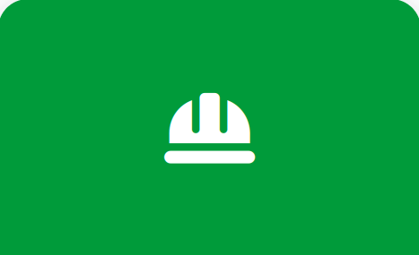
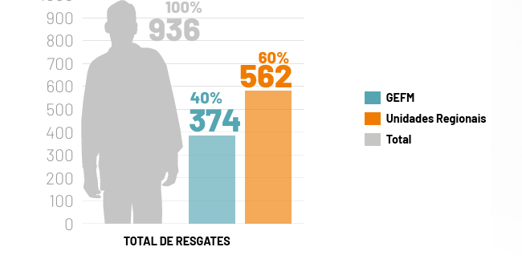
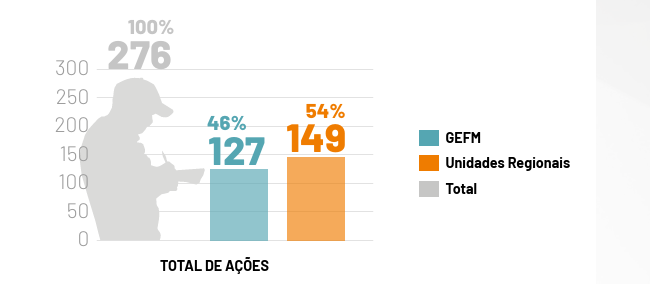
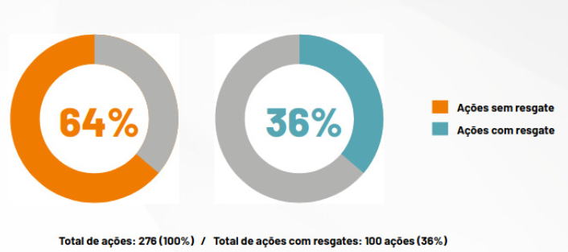

O que é Trabalho Escravo?
Conheça os elementos legais que caracterizam a condição análoga à escravidão no Brasil.

Conheça os elementos legais que caracterizam a condição análoga à escravidão no Brasil.
Identifique jornadas exaustivas, servidão por dívida, retenção de documentos e condições degradantes.
Saiba como verificar propostas de emprego e quais órgãos procurar para orientação segura.

Fonte: MTE / Radar SIT

Fonte: MTE / Radar SIT

Fonte: MTE / Radar SIT
Relatório 2020 sit oit 1